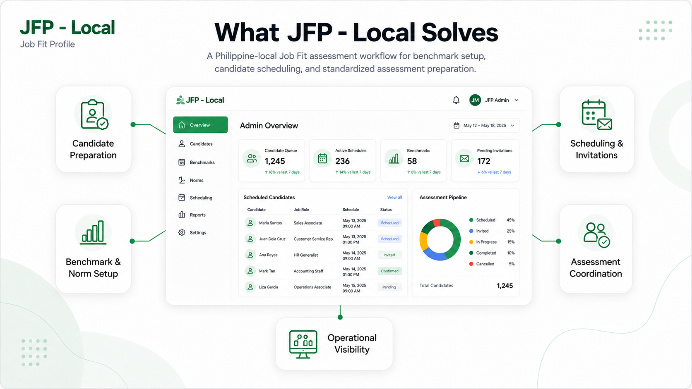

Case Study · HR & Assessment (Philippine Local)
JFP – AC Local
JFP – AC Local is a specialized Job Fit assessment application connected to the AC Local HR SaaS platform within the People Dynamics ecosystem. Tailored specifically for Philippine local corporate requirements, it supports Job Fit-specific benchmark configuration, local norm presets, candidate preparation, and assessment scheduling across Cognitive Ability, Personality, and Occupational Interest dimensions.
My contributions center on supporting candidate preparation guardrails, account expiration filtering, session-backed staging, and ensuring seamless schedule handoffs to the AC Local assessment runtime.

Specialized Philippine Local Job Fit Platform
JFP – AC Local provides a focused Job Fit assessment preparation and scheduling workflow for Philippine domestic clients. Rather than reproducing the broader account management, evaluation, and reporting features of AC Local, JFP concentrates on configuring Job Fit benchmarks and candidate schedules.
The Job Fit model evaluates candidates across three core dimensions—Cognitive Ability, Personality, and Occupational Interest—combining client-specific benchmarks, norms, and competency presets before transferring candidate control to AC Local.
Designed for local organizational contexts, JFP – AC Local operates under streamlined Philippine regulatory requirements while maintaining strict data integrity and transactional safety during schedule creation.
Job Fit Profile Dimensions
- Cognitive Ability Problem-solving capacity, spatial reasoning, verbal logic, and analytical evaluation.
- Personality Behavioral traits, workplace tendencies, interpersonal style, and emotional resilience.
- Occupational Interest Career orientation, role affinity, work environment alignment, and task motivations.
My Role & Ownership Boundary
As a Supporting Contributor on JFP – AC Local, my work centered on assisting with schedule-test workflow enhancements, verifying candidate import validation routines, supporting account expiration guardrails, and ensuring consistent session-backed candidate staging across local assessment preparation steps.
This case study does not claim ownership of the original JFP product, proprietary assessment methodology, scoring engine, norms content, report-generation algorithms, or the complete AC Local runtime environment. It documents only application support work verified by commit history.
Philippine Local Operational Context
While sharing underlying Job Fit evaluation logic with international variants, JFP – AC Local is optimized for domestic client operations:
Local Corporate Presets
Pre-configured benchmark and norm presets tailored specifically for Philippine industry standards, government organ requirements, and domestic corporate profiles.
Account Expiration Enforcement
Enforces local client account license expiration dates, preventing users from staging or scheduling assessments against expired client account contracts.
Streamlined Scheduling Workflow
Optimized scheduling wizard that reduces administrative steps for HR coordinators handling local bulk candidate evaluations.
Candidate Scheduling & AC Local Handoff
Client / Admin Scheduler (Local PH)
↓
Local Account & License Validation
↓
Candidate Batch Preparation
↓
Validation & Session Staging
↓
Job Fit Configuration
┌─────────────┬─────────────┬─────────────┐
│ Cognitive │ Personality │ Occupational│
│ Preset │ Preset │ Interest │
└─────────────┴─────────────┴─────────────┘
↓
Local Benchmark & Competency Selection
↓
Final Schedule Submission
↓
Create User + Candidate + Metadata
↓
Create Assessment Schedule + Authorization
↓
Send Candidate Invitation
↓
Parent AC Local Assessment Runtime
JFP – AC Local's scope concludes upon successfully staging and committing candidate schedules into the AC Local database. Assessment delivery, anti-cheating monitoring, scoring, and report compilation are handled by the main AC Local engine.
Connected Application & Data Boundary
JFP – AC Local Responsibility
- Job Fit benchmark setup
- JAS / manual benchmark flows
- Cognitive preset selection
- Personality preset selection
- Occupational-interest preset selection
- Local PH norm lookup
- Competency configuration
- Candidate staging & import processing
- Schedule configuration
Parent AC Local Responsibility
- Account ownership & tenancy
- User identity management
- Persistent candidate records
- Tenant candidate database schema
- Assessment execution runtime
- Schedule lifecycle management
- Results & score compilation
- Local PH report exports
JFP – AC Local
│
│ Candidate + Assessment Context
│
▼
AC Local Main Database
│
├─ User
├─ Account
├─ Auth Assignment
│
▼
Tenant Database
│
├─ Candidate
├─ Candidate Metadata
└─ Schedule
JFP – AC Local integrates directly with AC Local's database contracts and administrative session context. Schedule submission coordinates writes across main and tenant schemas so that JFP configuration becomes an executable assessment schedule within the local platform.
Mixed Legacy Application Moving Toward Explicit Layers
LEGACY JFP
Flat PHP Scripts
+
Static Model SQL
+
Page Includes
+
Mixed Responsibilities
↓
Incremental Refactor
MODERNIZED JFP AREAS
Controller
↓
Service
↓
Repository
↓
Model
↓
View / Components
↓
AC Local Main & Tenant DB Contracts
JFP – AC Local shares the overall ecosystem's mixed architecture, combining legacy flat PHP execution paths with refactored 5-layer schedule components. touched behavior is incrementally structured while established working routines remain intact.
Candidate Preparation Before Persistence
JFP – AC Local separates candidate staging from persistent database commit so HR teams can clean candidate inputs beforehand.
Validation
Required candidate fields, valid email format, supported gender values, lengths, and import consistency are checked before scheduling.
Duplicate Handling
Import processing identifies invalid or repeated candidate rows before they can enter the final persistence flow.
Account Guardrails
Candidate-registration accounts are filtered using effective expiration rules, reducing the risk of scheduling against expired account contexts.
Account Locking
Once staged candidate records depend on the selected account, account changes are constrained to prevent context mismatches.
Atomic Cross-System Scheduling
BEGIN TRANSACTION
↓
Create User
↓
Create Tenant Candidate
↓
Create Candidate Metadata
↓
Create Schedule
↓
Create Authorization Assignment
↓
Everything successful?
┌───────┴────────┐
NO YES
↓ ↓
ROLLBACK COMMIT
Schedule submission executes transactionally across main and tenant data tables. Any failure during user, candidate, metadata, schedule, or authorization insertion triggers a complete rollback to preserve database integrity.
Technical Decisions
1. Keep JFP as a Specialized Application
Context: Job Fit configuration requires workflows different from general account and candidate management.
Decision: Preserve JFP as a focused application integrated with the AC Local platform.
Benefit: Keeps specialized assessment configuration isolated.
Tradeoff: Requires explicit integration contracts with parent databases and session context.
2. Direct Parent-Database Integration
Context: AC Local already owns accounts, users, candidates, schedules, and assessment execution.
Decision: Integrate JFP through existing main and tenant database contracts.
Benefit: Immediate interoperability with the established local platform.
Tradeoff: Strong coupling to existing schema structures.
3. Session-Backed Candidate Staging
Context: Schedulers may prepare multiple candidates before committing assessment records.
Decision: Stage validated candidates in session until final submission.
Benefit: Allows review/import/removal without premature persistent writes.
Tradeoff: Session state requires explicit consistency and validation controls.
4. Incremental 5-Layer Modernization
Context: JFP is an active legacy PHP application and cannot be cleanly rewritten all at once.
Decision: Refactor touched scheduling behavior into Controller → Service → Repository → Model → View boundaries.
Benefit: Improves traceability while preserving working legacy behavior.
Tradeoff: Mixed architectural patterns remain during transition.
Testing & Quality Strategy
Team / Application Verification
- Existing manual workflow testing
- Candidate scheduling verification
- AC Local platform schedule confirmation
Additional Developer Verification
- Playwright tooling where applicable
- PHP-level validation checks
- Repository & service-level checks where implemented
- Runtime verification of refactored schedule flows
Technology Stack & Technical Metadata
Verified Qualitative Outcomes
Clearer Scheduling Architecture
Schedule-test behavior is increasingly separated into explicit controller, service, repository, model, and view responsibilities.
Explicit Job Fit Data Boundary
JFP-specific norms and assessment preset queries are centralized through a dedicated repository rather than distributed across page-level scripts.
Safer Candidate Preparation
Candidate validation and session-backed staging reduce premature database mutation before final scheduling.
Stronger Account Guardrails
Effective account-expiration rules prevent invalid candidate-registration contexts from being presented for scheduling.
Atomic Schedule Creation
Related user, candidate, metadata, schedule, and authorization writes are treated as a single transactional operation rather than independent best-effort inserts.
Key Engineering Takeaway
Targeted modernization around sensitive candidate data ingestion and cross-system database writes significantly improves application stability, even in complex legacy ecosystems.